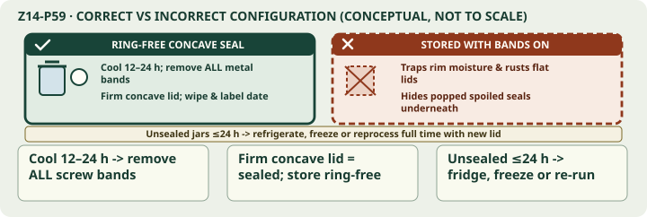

Z14-P59 · Food production and preservation · New manuscript
Test vacuum seals after cooling, remove screw bands, and handle unsealed jars
Catch unsealed jars within the safe 24-hour window and prevent hidden rust and false resealing during long-term pantry storage.
When it applies · Every home-canned batch after the mandatory 12-to-24-hour cooling period.
Equipment · Clean damp cloth, permanent marker, and refrigerator/freezer or fresh lids for 24-hour reprocessing.

Actions
- After 12 to 24 hours of undisturbed cooling, remove ALL metal screw bands cleanly and test every flat lid: a properly sealed lid curves slightly CONCAVE (downward) at the center, does NOT flex or pop up/down when pressed gently, and holds firmly when lifted carefully by the lid rim edges just an inch above the towel.[P09]
- Store sealed jars WITHOUT screw bands (leaving rings on traps moisture that rusts rims and can hide a popped spoiled lid by artificially holding it flat!), wash jar exteriors gently with warm soapy water, dry thoroughly, and label with food name and exact date.[P09, P10]
- If ANY jar fails to seal within 24 hours of processing, immediately choose one of three safe NCHFP options: refrigerate and eat promptly, freeze in freezer-safe containers, OR reprocess the ENTIRE full time using a clean inspected jar rim and a brand-new flat lid within 24 hours.[P09, P10]
Failure recognition · Leaving metal screw bands screwed tight onto stored jars so a spoiled jar pops and reseals invisibly underneath the band.[P09, P10]
Verify · Confirm rings removed after 12–24 h, concave firm seals verified, jars wiped/labeled cleanly, and any unsealed jars handled within 24 hours.[P09, P10]
Stop or change course · Unsealed jars discovered MORE than 24 hours after processing must be treated as spoiled and discarded safely without tasting.[P10]
Evidence and editorial notes
- P09 · NCHFP · Using Pressure Canners (current web edition)
- Section: Headspace, Jar Preparation, Two-Piece Lids, and Cooling Seals · Conditions: Mason-type canning jars with two-piece metal lids and screw bands
Support: Use true canning jars (never commercial mayonnaise jars), leave exact recipe headspace, remove trapped air bubbles, wipe jar rims clean, tighten bands fingertip-tight only, and let jars cool undisturbed 12–24 hours before checking vacuum seals and removing rings for storage.
Limitations: Inverting jars, tightening bands after cooling, or re-using flat sealing lids causes seal failure and silent spoilage. · Conflicting evidence: None; directly targets top home-canning mechanical failures.
Editorial note: Grounds jar-seal mechanics and inspection cards in Z14. · Specialist reviewer: Food preservation specialist
Primary source · checked 2026-11-24 - P10 · NCHFP · Identifying and Handling Spoiled Canned Food (current web edition)
- Section: Identifying and Handling Spoiled Canned Food > Botulism Detoxification · Conditions: Suspected unsealed, bulging, spurting, foamy, moldy, or improperly processed home-canned jars
Support: Never taste suspect home-canned food—botulinum toxin is odorless and tasteless; check every seal before opening, discard unsealed jars promptly after processing (or refrigerate/reprocess within 24 hours per NCHFP rules), and follow official NCHFP detoxification/disposal steps for suspect low-acid jars.
Limitations: Simple visual clarity or normal smell never proves an untested low-acid jar is free of botulinum toxin. · Conflicting evidence: None; mandatory high-consequence food-safety stop condition.
Editorial note: Anchors spoilage inspection and safe disposal in Z14. · Specialist reviewer: Food microbiology and public health
Primary source · checked 2026-11-24
Source lineage · NCHFP Checking Seals and Reprocessing; new manuscript · Classification · New manuscript.